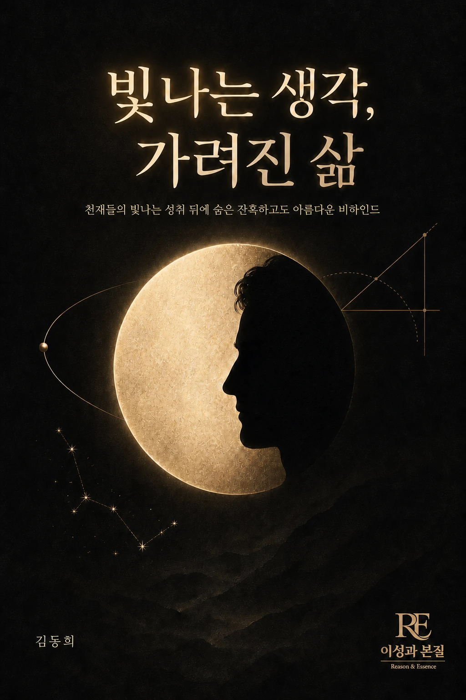

우주를 보고, 무한을 증명하고, 세상을 바꾼 이들이 맞이한 가장 잔혹하고도 아름다운 종말. 위대한 사유의 이면에 드리운 삶의 그림자를 조명한다.
우주를 보고 무한을 증명하고 세상을 바꾼 천재들의 이름은 널리 알려졌지만, 그 성취 뒤에 있던 개인의 삶은 종종 가려집니다. 이 책은 그 빛과 그림자를 함께 조명하며, 위대한 사유가 태어난 인간적 맥락을 되짚습니다.
과학사·지성사 속 인물 이야기를 좋아하는 독자, 성취의 이면에 관심 있는 독자.